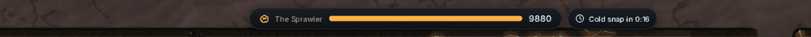
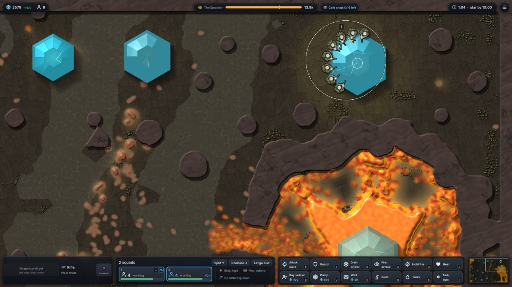
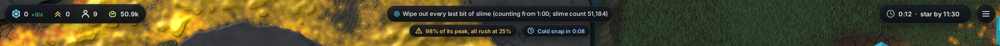
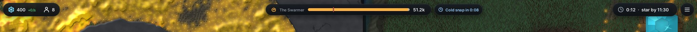
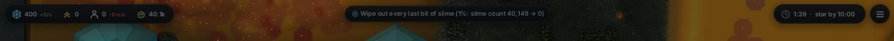
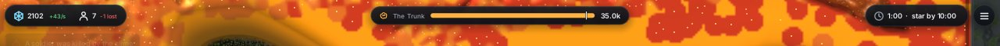
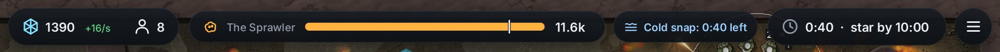

<title>Slime Gauge</title>
<meta name="claude:viewport-fit-sides" content="cover">
<link rel="stylesheet" href="https://fonts.googleapis.com/css2?family=Inter:wght@400;500;600&family=Space+Grotesk:wght@500;600&display=swap">
<style>
/* Layout: one reading column, each finding a heading, the pictures full column width, game HUD dark throughout. */
:root {
  --bg: #0e1116; --panel: #171c23; --edge: #2a313b; --fg: #e6eaef; --muted: #9aa5b2;
  --amber: #ffb240; --cyan: #60beff; --red: #f26262;
  --display: "Space Grotesk", "Inter", system-ui, sans-serif;
  --body: "Inter", system-ui, -apple-system, "Segoe UI", sans-serif;
  color-scheme: dark;
}
body { background: var(--bg); color: var(--fg); font-family: var(--body); font-size: 15px; line-height: 1.55; }
main { max-width: 1000px; margin: 0 auto; padding-block: 32px 64px; padding-left: max(16px, env(safe-area-inset-left, 0px)); padding-right: max(16px, env(safe-area-inset-right, 0px)); display: grid; gap: 28px; }
h1, h2 { font-family: var(--display); font-weight: 600; text-wrap: balance; margin: 0; }
h1 { font-size: 30px; }
h2 { font-size: 20px; }
p, li { max-width: 68ch; margin: 0; }
.lead { color: var(--muted); }
section { display: grid; gap: 12px; }
figure { margin: 0; display: grid; gap: 6px; }
figure img { width: 100%; border: 1px solid var(--edge); border-radius: 6px; background: #000; image-rendering: auto; }
figcaption { color: var(--muted); font-size: 13px; }
.tag { font: 600 11px/1 var(--body); letter-spacing: .08em; text-transform: uppercase; color: var(--muted); }
.tag.after { color: var(--amber); }
.pair { display: grid; gap: 14px; }
ol, ul { margin: 0; padding-left: 22px; display: grid; gap: 8px; }
code { font-size: 13px; background: var(--panel); padding: 1px 5px; border-radius: 4px; }
.key { display: grid; grid-template-columns: auto 1fr; gap: 6px 12px; align-items: center; }
.sw { width: 26px; height: 10px; border-radius: 5px; }
</style>
<main>
  <header style="display:grid;gap:8px">
    <span class="tag">Plasmodia · HUD · 2026-11-27</span>
    <h1>The slime's size at a glance</h1>
    <p class="lead">In a run the top bar's middle was a goal sentence: "Wipe out every last bit of slime (counting from 1:00; slime count 49,559)", later with the heart's numbers on its end, with the slime's pills hanging under it. Now it is a bar for the slime, and every pill sits beside it in the same row.</p>
  </header>

  <section>
    <h2>How to read the bar</h2>
    <div class="key">
      <div class="sw" style="background:#2b2f35"></div><div>The whole bar is the most the slime has ever been on this planet (its peak).</div>
      <div class="sw" style="background:var(--amber)"></div><div>The fill is its size now. The number after the bar is the same count.</div>
      <div class="sw" style="background:#ffecca"></div><div>A pale piece at the end of the fill is what you cut in the last 3 seconds.</div>
      <div class="sw" style="background:#fff;height:14px;width:3px;margin-left:11px"></div><div>The white mark is its size when you landed. It moves left as the slime grows past it, and disappears while the slime is still at its landing size.</div>
      <div class="sw" style="background:var(--red);height:14px;width:3px;margin-left:11px"></div><div>On the Swarmer's planet, a red mark where all of it rushes you. It replaces the old "96% of its peak, all rush at 25%" pill.</div>
    </div>
    <p>Hovering the bar gives the numbers: now, at landing, at the most, and the percentage of the most.</p>
  </section>

  <section>
    <h2>In motion</h2>
    <figure>
      
      <figcaption>Planet 2 (the Sprawler), run seed 1, the squad holding by its crystals, 0:04 to 2:00 every 2 game seconds. The slime grows from 9,880 to 15.4k, so the landing mark slides left to about two thirds. The cold-snap pill counts down beside it and goes; the bar stays where it is.</figcaption>
    </figure>
    <figure>
      
      <figcaption>The whole screen at 1:04, 1600 x 900, 100%.</figcaption>
    </figure>
  </section>

  <section>
    <h2>Before and after</h2>
    <div class="pair">
      <figure><span class="tag">Before · planet 4 · 1920 x 1080 at 100%</span><figcaption>Goal sentence with the count again, two pills hung under it into the map, and the count a third time on the left (49.6k).</figcaption></figure>
      <figure><span class="tag after">After · planet 4 · 1920 x 1080 at 100%</span><figcaption>One row: the Swarmer's bar with its red rush mark at 25%, the cold snap beside it. Shop points are hidden until there are some.</figcaption></figure>
      <figure><span class="tag">Before · planet 3 · 1280 x 800</span><figcaption>"(1%: slime count 40,149 → 0)": the 1% was progress toward the goal, which read as nothing.</figcaption></figure>
      <figure><span class="tag after">After · planet 3 · 1280 x 800</span></figure>
      <figure><span class="tag after">After · planet 2 · 1920 x 1080 at 200% UI size</span><figcaption>Still one row at 200%. The landing mark at about 85%: the slime has grown since landing.</figcaption></figure>
    </div>
  </section>

  <section>
    <h2>What else changed</h2>
    <ul>
      <li>The heart and the stalemate warning, which were tails on the goal sentence, are small red pills: "Heart 1,660, breaks under 166", "Nothing happening: ends in 12 s".</li>
      <li>The pills ride in the top row when they fit. That holds on 1080 lines and larger up to 125% UI size, tested at 40 screen and size pairs; past that they make one row under the bar, never three.</li>
      <li>The campaign's goal line (outside a run) never takes a row of its own any more: it shrinks to 12 px and is then cut, the whole sentence on hover. Only a window too narrow for even that keeps the old second row.</li>
      <li>The goal, to wipe the slime out, is still on the pause menu.</li>
    </ul>
  </section>

  <section>
    <h2>Further suggestions, in order</h2>
    <ol>
      <li><b>Shorter, fewer alerts.</b> The top-left toasts stack up to five, each for 6 s, and 13 of the 44 fixed texts run over 60 characters (the longest is 111: "No squad controlled: each runs on its own orders. WASD pans; click a squad, its number or Space to take command"). Suggest at most three at once, about 4 s each, every one cut to a short clause, and a repeat shown as "×3" rather than a new line.</li>
      <li><b>The slime's other tells in the bar.</b> The Sleeper's "62% asleep" as a darker part of the fill, the Grudge's scarred share the same way, and the heart as a small bar of its own (its size against its most, a mark where it breaks). Most of the pills would then go.</li>
      <li><b>A hold-to-hide key</b> that clears the top bar and pills while held, for a full view of the fight.</li>
      <li><b>The twist's countdown in the clock pill</b> ("0:40 · cold in 0:08"), since it is a time, leaving the middle to the slime.</li>
      <li><b>The empty gun panel</b> ("No gun cards yet, the shop sells them") at the bottom left shrinks to a slot until there is a card.</li>
    </ol>
  </section>
</main>
